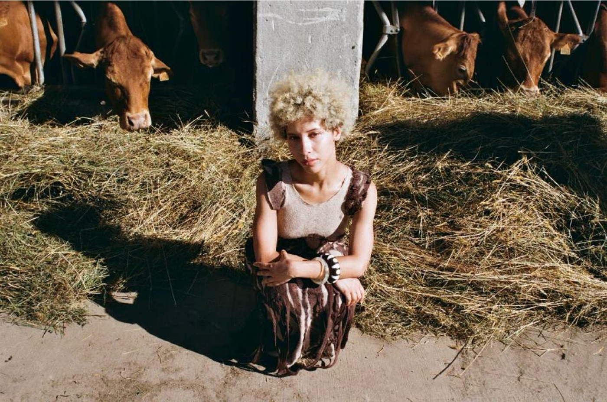
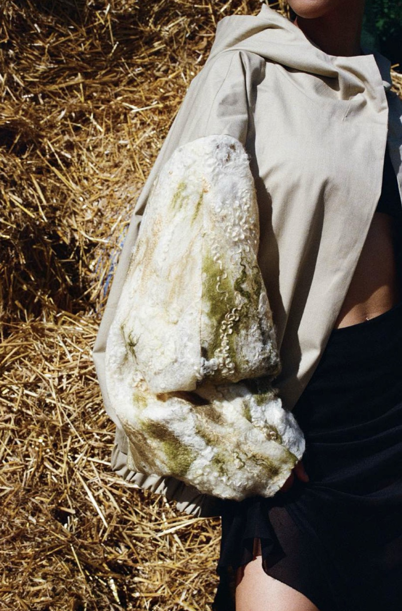

On the Nature of Us
Collection · Fashion Design BA, 2025The collection expresses the connection between nature and humanity, not through the use of natural materials but through visual and conceptual elements that evoke nature’s presence in form, shape and structure.
By employing design techniques and aesthetics drawn from organic patterns, geometric forms and textural contrasts, the collection creates a dialogue between nature and humanity, showing how the external world serves as a mirror to our inner landscapes.
It is a reflection on how understanding nature’s intricate beauty and complexity allows us to reconnect with our deeper selves, and encourages a more conscious, introspective view of our relationship with the world around us.
Process



